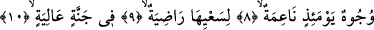
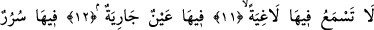
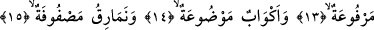
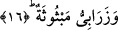

ORADA BOŞ BİR
SÖZ İŞİTMEZLER
8. O gün bir takım yüzler de vardır ki, mutludurlar;
9. (Dünyadaki) çabalarından hoşnut olmuşlardır,
10. bir Cennettedirler.
11. Orada boş bir söz işitmezsin.
12. Orada (Cennette) devamlı akan bir pınar,
13. Orada yükseltilmiş tahtlar,
14. (Önlerine) konulmuş kadehler,
15. Sıra sıra dizilmiş yastıklar,
16. Serilmiş halılar vardır.
Yani yüzler vardır o gün ayın ondördü gibi parlak, güzel ve pırıl pırıldır. Yani o gün
yüzler taze olur, nimetin eseri onda zâhir olur. Bu verdiğimiz anlam “naime” kelimesini
parlaklık, güzellik şeklinde olmasına göredir. Bu kelimeyi “nimetlenmiş” şeklinde
almamız da mümkündür. O zaman âyetin mânâsı şu şekilde olur: Yüzler vardır o gün
cismânî ve rûhânî nimetler içindedir. Bu yüzler mü’minlerin yüzleridir. Bu takdirde
nimetle kasdedilen gerçek nimet olur. Bu cümlenin bir önceki cümleye atfedilmemiş
olması her iki cümlede ifâde edilen mânânın birbirinden ne kadar farklı olduğunu
vurgulamak içindir. Surenin bütününde önce cehennemliklerin durumlarının anlatılması
sebebsiz yere değildir. Çünkü bu şekilde bir öncelik kıyametin korkunçluğunu ve onun
ne kadar muazzam ve büyük bir haber olduğunu daha iyi vurgular.
Bu okuduğumuz âyet-i kerimede letafetin semeresi olan lika nimetine, tecerrüd
neticesi olan nûriyyet nimetine işâret vardır. Nitekim aynı anlamı bir başka âyet-i
kerimede şu şekilde görebiliyoruz: “Yüzler vardırki o gün ışıl ışıl parıldayacaktır.
Rablerine bakacaklardır (onu göreceklerdir)” (Kıyame, 75/22) Çünkü Rabba
bakmakla insanın yüzünde bir parlaklık, bir hoşluk ve güzellik oluşur.